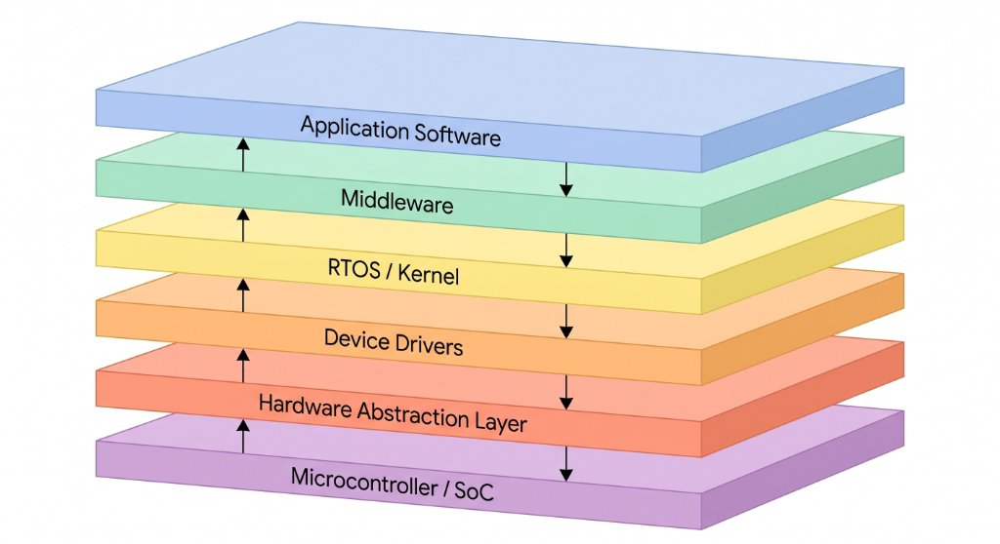

Lesson 6: Fundamentals of Operating Systems, File Management & Data Backup
A comprehensive guided reading companion exploring how operating systems manage computer hardware, background services, file permissions, and data protection strategies across modern digital environments.
What is an Operating System?
The Role of the OS & The 5 Core Functions (Slides 10–11)
The Conductor Analogy: What Do Coaches, Librarians & Store Managers Have in Common?
As presented in Slide 10, consider what a sports coach, a librarian, and a supermarket store manager do all day: they do not manufacture the books or kick the football themselves. Instead, they organise people, manage resources, maintain inventory, and coordinate traffic so everything runs smoothly.
An Operating System (OS) performs the exact same supervisory role for a computer. It sits directly between the physical hardware components (CPU, RAM, storage drives, network chips) and user software (browsers, word processors, games), coordinating every single interaction.
The 5 Core Functions of Every Operating System (Slide 11)
Hardware Control
Communicates with processors, memory, graphic cards, and peripherals through specialised device drivers.
User Interface
Provides a visual desktop (GUI) or terminal prompt (CLI) so humans can control and command the computer.
File System
Organises data into files, folders, and directories, keeping track of where every byte is physically stored on disk.
App Platform
Provides a stable software execution platform so software developers can write apps that run predictably.
System Security
Enforces passwords, user permissions, encryption, and firewalls to protect data from unauthorised access.
Types of Operating Systems: Embedded to Enterprise (Slide 12)
Embedded & Real-Time (RTOS)
Built directly into dedicated hardware devices to perform specific, time-critical tasks with zero margin for failure:
- Automotive OS: Engine control units (ECU), ABS braking systems, and digital dashboards in cars.
- Avionics OS: Flight-management computers in aircraft requiring real-time response guarantees.
- Smart Home Devices (IoT): Smart thermostats, televisions, and smart kitchen appliances.
Mobile Operating Systems
Engineered for compact touchscreens, battery conservation, wireless cellular connections, and sandboxed app stores:
- Google Android: Open-source Linux-based OS powering diverse smartphones, tablets, and smart TVs.
- Apple iOS / iPadOS: Proprietary, hardware-locked operating system optimised for iPhone and iPad devices.
Client / Workstation OS
Designed for personal and office computers supporting multiple open windows, keyboards, mice, and diverse desktop peripherals:
- Microsoft Windows 11: The global corporate enterprise standard with extensive peripheral support.
- Apple macOS: Unix-based OS favoured in graphic design, audio engineering, and creative industries.
- Linux (Ubuntu / Mint): Free open-source OS celebrated for software development and privacy.
Server Operating Systems
Hardened for 24/7 reliability, serving thousands of concurrent users across enterprise local networks and the internet:
- Windows Server: Powers Active Directory domains, group policies, and enterprise file shares.
- Linux Server (Red Hat / Debian): Powers over 80% of world web servers, cloud clouds, and SQL databases.
Text-Based (CLI) vs Graphical (GUI) Interfaces (Slide 13)
Command Line Interface (CLI)
The user communicates with the computer by typing precise textual syntax into a terminal or shell.
Graphical User Interface (GUI)
The user interacts through visual elements using the WIMP standard: Windows, Icons, Menus, and Pointer.
🖱️ How Xerox PARC Replaced Green Text with Windows, Folders & a Wooden Mouse
For the first 30 years of electronic computing, computers had zero graphics. Technicians had to memorise hundreds of cryptic text commands on black screens or feed physical punched cards into room-sized mainframes. Computing was restricted to computer scientists and mathematicians.
Everything changed in 1973 at the Xerox Palo Alto Research Center (PARC). Engineers built the Xerox Alto — the world's first computer to display overlapping visual windows, clickable document icons, a virtual desktop canvas, and a three-button hand-held mouse. When Steve Jobs visited PARC in 1979, he famously remarked: "Within ten minutes, it was obvious to me that all computers would work like this someday." This breakthrough led directly to the Apple Macintosh in 1984 and Microsoft Windows 1.0 in 1985.
Key Functions & Architecture of an Operating System
Hardware Abstraction & Device Drivers (Slide 16)
An operating system creates a universal translation layer called the Hardware Abstraction Layer (HAL). Without this layer, every single software application (like Microsoft Word or Spotify) would need to know the exact circuitry of every printer, speaker, and monitor in existence.
Application Level
You click "Print" in Word. Word simply issues a generic print command to the operating system: "Print 1 copy of document on Printer X."
OS Translator
The OS hands the job to the manufacturer's Device Driver. The driver translates the generic command into raw electronic micro-instructions.
Hardware Action
The printer's laser or inkjet mechanism fires precisely, pulling paper from the tray and spraying ink or fusing toner.
What is a Hardware Abstraction Layer (HAL)?
⚙️ How a HAL Works
Exposes uniform functions (such as Init, Read, Write, or digitalWrite) that define expected behaviour across different chips, motherboards, or microcontrollers.
Separates application logic and core OS components from raw electronic register addresses, bit masks, bus protocols, and manufacturer device drivers.
Lets you move software across different hardware platforms by simply updating lower-level implementations while keeping higher-level code largely intact.

Code Examples Across the 6 System Layers
As you move down the 6-layer architecture stack, the code transforms from human-friendly business logic into raw electrical micro-instructions. Here is an authentic example of the programming languages and code used at each layer:
printer.print_invoice("INV-2026.pdf")
SpoolerQueue.enqueue(job, Format.PDF);
os_schedule_task(task_id, PRIORITY_HIGH);
usb_bulk_send(EP2_OUT, buf, len);
WritePin or Init) that insulate drivers and kernels from specific silicon registers. Swapping from an Intel to an AMD processor only requires updating this layer.
HAL_GPIO_WritePin(PORT_B, PIN_7, SET);
What it does: Raw hardware execution. Humans cannot easily read streams of 1s and 0s, so engineers write Assembly language mnemonics. The computer's assembler translates these directly into pure binary machine code (1s and 0s).
What sits below binary? Pure physics and electricity! Inside the silicon chip, a binary 1 is a real electrical voltage pulse (+3.3V or +1.8V), and a 0 is ground (0V). Billions of microscopic transistors switch these voltages millions of times per second.
Task & Memory Management: Preventing Resource Starvation (Slide 16)
A modern computer runs hundreds of programs and background threads concurrently. The operating system acts as the traffic policeman:
Time-Slicing Processor Cycles
The OS kernel divides CPU clock time into tiny slices of milliseconds, giving each active app turn-by-turn access so your computer feels like it is running 20 programs at the exact same instant.
RAM Address Protection
Each application is assigned its own private block of Random Access Memory. If one app crashes or contains a memory leak, the OS stops it from corrupting other programs or crashing Windows.
🚀 How Margaret Hamilton's Priority Scheduler Saved Apollo 11 & Coined "Software Engineering"
On 20 July 1969, just three minutes before astronauts Neil Armstrong and Buzz Aldrin were scheduled to touch down on the lunar surface, alarms 1201 and 1202 flashed across the Apollo Guidance Computer (AGC) screen. A radar switch had mistakenly been left in the wrong position, flooding the processor with thousands of unneeded tracking calculations every second. The computer was facing total resource exhaustion.
Catastrophe was averted because Margaret Hamilton — Director of the Software Engineering Division at the MIT Instrumentation Laboratory — had architected the operating system with asynchronous priority task scheduling. At a time when software programming was rarely taken seriously by male aerospace engineers, Hamilton fought for rigorous software standards and famously coined the term "Software Engineering" to establish coding as a respected engineering discipline.
When the alarms sounded, her operating system recognised that CPU cycles and memory were exhausted. Rather than crashing, the scheduler instantly dropped the low-priority radar readings and dedicated 100% of computing power to high-priority tasks: firing the descent thrusters and landing safely. Her groundbreaking leadership earned her the Presidential Medal of Freedom, celebrating her as one of the greatest female pioneers in STEM history.
Managing Background System Services (`services.msc`) (Slide 16)
Unlike desktop apps that open a visible window, System Services (or daemons in Linux) run silently in the background from the moment the computer boots up:
Holds print jobs in a memory queue on disk until the physical printer is ready to feed paper.
Continuously scans files being written to disk and blocks suspicious ransomware execution in real time.
Monitors the radio spectrum for wireless keyboards, mice, and headsets, establishing encrypted pairing links.
Interactive OS Task & Service Control Monitor (Vocational Lab)
Simulated OS Kernel Task & Service Manager
Observe live CPU scheduling and terminate unresponsive processes| Process / Service Name | PID | State | CPU Usage | Memory (RAM) | OS Control Action |
|---|
File Management, Paths & Disk Operations
File Hierarchies, Absolute Paths & Common File Extensions (Slide 20)
Operating systems organise secondary storage (SSDs and hard drives) into a hierarchical tree structure. Every file has an Absolute Path that pinpoints its exact address on the drive:
Understanding File Extensions (The File Type Signature)
The operating system uses the characters after the final dot to decide which application handles the file:
🛡️ The Double-Extension Trap: Why Every IT Technician Enables File Extensions on Day One
By default, fresh installations of Microsoft Windows actively hide file extensions for known file types. For example, a document named Quarterly_Budget.xlsx appears on the user's screen simply as Quarterly_Budget. Microsoft configured this default decades ago to make desktop screens look cleaner for everyday home users.
However, cybercriminals exploit this setting constantly to disguise dangerous malware. An attacker will email a file named Overdue_Invoice_2026.pdf.exe with an embedded Adobe Acrobat icon. Because Windows hides the true final extension (.exe), the unsuspecting user only sees Overdue_Invoice_2026.pdf. Believing it is a safe PDF document, they double-click it and accidentally execute malicious ransomware!
Press Win + E or click the folder icon on the taskbar.
Click the View dropdown menu on the top horizontal toolbar ribbon.
Move your cursor down to the Show > fly-out submenu at the bottom of the list.
Click to tick File name extensions. (A tick mark ✅ will appear).
...) → Options → View tab → untick "Hide extensions for known file types" → click Apply.
Working with Files: Permissions, Compression & Encryption (Slide 21)
Encrypting File System (EFS)
Scrambles individual files or folders into unreadable ciphertext. Even if an attacker physically steals the hard drive, they cannot view the file without the user's cryptographic certificate.
ZIP & NTFS Compression
Identifies repeated patterns in data and packs them into fewer bytes. Saves storage capacity on SSDs and reduces upload bandwidth when emailing large documents.
NTFS Access Control Lists (ACLs)
Defines what specific users can do with a file: Read (view only), Write (edit/save changes), Execute (run software), or Full Control (modify or delete).
Three Fundamental Access Control Models
Security administrators do not hand out file access randomly. Access is architected using three universal industry principles:
The "Need-to-Know" Rule
Users and software applications are given only the minimum permissions necessary to complete their job, and nothing more.
Groups Over Individuals
Permissions are assigned to job roles or security groups, never scattered across hundreds of separate individual people.
Finance-Staff group, instantly inheriting correct rights.
Owner-Managed Discretion
The creator or owner of an asset retains personal discretion to decide who can open, edit, or delete it.
⚖️ Local OS Permissions vs Cloud Collaboration Roles
Comparing Windows NTFS file system permissions with modern Google Drive & Microsoft 365 cloud roles.
| Access Level / Goal | Windows NTFS (Local OS / Active Directory) | Google Drive (Cloud Collaboration) | Everyday Workplace Scenario |
|---|---|---|---|
| 👁️ View Only | Read Can open files, view document text, and browse folder structure. Cannot type edits or delete. | Viewer Can read document text and copy information. Cannot edit, comment, or share further. | A customer service apprentice reading the company pricing handbook or employee benefits guide. |
| 💬 Review & Suggest | Read & Execute No native commenting role; leaving notes requires Write access to the underlying file. | Commenter Can leave suggestion balloons and margin comments without altering the original text. | A line manager proofreading a draft sales report before approving it for client release. |
| ✏️ Edit & Author | Modify / Write Can create new files, overwrite content, save changes, and delete own work. | Editor Can actively type edits, delete text, upload new versions, and organise folders. | A marketing design team collaborating simultaneously on a slide deck or proposal. |
| 🔑 Full Management | Full Control Can change security permissions, take ownership, and permanently purge entire folder trees. | Owner / Manager Can delete the root drive, transfer ownership, manage member access tiers, and empty trash. | The IT Systems Administrator or Department Director maintaining the shared department archive. |
🍝 Avoid "Permission Spaghetti" — Always Assign Rights to Groups, Never Individuals!
When novice technicians set up file access, they often make the mistake of adding individual user accounts (e.g. Liam, Sarah, Marcus) directly to dozens of different folders. In IT, this is known as "Permission Spaghetti".
When Sarah leaves the company or moves from Marketing to HR six months later, nobody remembers which 50 folders she was individually granted access to! This creates massive security vulnerabilities, data leaks, and compliance audit failures.
Interactive ServiceNow ITIL Help Desk Console: Identity, Access & Permissions (Slide 20 Practical)
ITIL Framework: Incidents vs Requests for Service
Understanding ITIL Ticket Types: Incident vs Request for Service
When users submit tickets to an IT service desk, technicians must immediately categorise the type of ticket. Treating a routine user request as an incident or treating an outage as a routine request causes chaos in the help desk queue:
Incident
Key Sign: Something that used to work is now broken, degraded, or halted. The primary objective is to restore normal operations as rapidly as possible.
Request for Service (Service Request)
Key Sign: Nothing has failed! It is a planned request for standard access, advice, new equipment, or pre-approved permissions. Handled via standard request fulfilment workflows.
| Dimension | Incident (Break / Fix) | Request for Service (Standard Request) |
|---|---|---|
| Core Definition | Unplanned interruption or quality reduction | Planned formal request for an existing standard IT service |
| Primary Objective | Restore normal service as quickly as possible | Fulfil the requested service smoothly and accurately |
| Typical Priority | Driven by Impact & Urgency (P1 Critical to P5 Low) | Standard SLA timeline (P5 Request – 1 to 3 business days) |
| Example Scenario | "Access Denied on Finance Share after folder move" | "Please create domain account for new marketing apprentice" |
| Resolution Workflow | Incident Management (Diagnose, Workaround, Fix, Test) | Request Fulfilment (Verify Form Sign-off, Provision, Notify) |
ITIL Incident Prioritisation Checklist & Priority Scale
The 3-Question Incident Prioritisation Framework
ITIL defines priority as a calculation of Impact (how many users or business processes are affected) and Urgency (how quickly the business requires a resolution). Use this 3-question checklist before assigning a priority level:
How many people or systems are stopped from working?
- Whole Company: Core network, ERP, or server farm is down.
- Entire Department / Health & Safety Risk: e.g. Customer support phones offline, burning component hazard.
- Single Team: Shared marketing network folder inaccessible.
- Single User: One person's monitor or mouse stopped working.
Is there an immediate business deadline or critical financial risk?
- Immediate Financial Loss: Cash registers / e-commerce checkout halted.
- Boardroom / Pitch Deadline: Executive presentation starting in 15 minutes.
- Workaround Available: User can work on an adjacent spare laptop.
Combine Impact + Urgency to assign the appropriate ticket queue level:
The 5-Level ITIL Priority Scale
| Priority Level | Business Scope & Impact | Target Response SLA | Workplace Example |
|---|---|---|---|
| P1 - Critical | Whole Organisation Down | 15–30 Minutes | Primary domain controller offline; warehouse logistics dispatch system halted |
| P2 - High | Entire Department Down / Major Security Threat | 1–2 Hours | Customer service phone queue offline; active foreign IP credential compromise; smoke/fire hazard |
| P3 - Medium | Team / Shared Resource Down | 4 Hours | Shared marketing department network folder offline; departmental network printer unavailable |
| P4 - Low | Single User Workstation | 8 Hours | Single user access denied on one subfolder; single monitor flickering; local credential sharing violation |
| P5 - Request | Standard Request for Service | 3 Business Days | New employee apprentice onboarding; internal department transfer; scheduled leaver deactivation |
Technical Domain Assessment: Hardware vs Software vs Network vs Security
To route tickets to the correct resolver team, technicians classify the root issue into one of four primary enterprise domains:
Physical devices, cables, chips, and tangible electronics:
Power Supplies • RAM • SSD Disks • Monitors • Keyboards • Docking StationsOperating systems, file systems, permissions, directory services, and apps:
NTFS Permissions • User Accounts • Active Directory • Google Workspace • AppsCommunication paths, wireless access, and infrastructure:
Ethernet Switches • Wi-Fi APs • IP Subnets • DHCP • DNS • Default GatewaysAccount compromise, credential sharing, malware, and policy breaches:
Brute Force Logins • Password Sharing • MFA Fatigue • Phishing • Data BreachesYou have started your shift on the IT Service Desk. Six tickets have arrived in your queue across your shift (3 Incidents and 3 Service Requests: a new starter onboarding, an internal staff transfer/role change, and an offboarding leaver with unreturned equipment). Open each ticket, inspect the Live Diagnostics and the Service Request Form (SRF) tab, classify its Ticket Type and Domain, calculate its Priority (P1–P5), verify manager authorisation, and select the correct technical resolution action.
| Number | Short Description | Caller | Opened | Ticket Type | Domain | Priority | Form Check | State |
|---|
Enterprise Access Control & User Lifecycle Playbook (SOP-IAM-06)
🔒 Locked: Submit Triage Queue to UnlockStandard Operating Procedures for Account Provisioning, Role Transfers, Leaver Offboarding, Credential Security, and Lockdowns.
1. Verify HR & Line Manager digital signatures on SRF form before taking action.
2. Provision account in target department OU in Active Directory / Google Workspace.
3. Assign membership to the designated Department Security Group (e.g. GG_Marketing_Staff).
4. Golden Rule: Never assign permissions directly to an individual user account. Always enforce Role-Based Access Control (RBAC).
1. Require dual manager authorisation (releasing manager and receiving manager).
2. Add user to the new department security group (e.g. GG_Purchasing_Staff).
3. Immediate Revocation: Remove user from old departmental groups (e.g. GG_Support_Tier1).
4. Uphold the Principle of Least Privilege (PoLP) to prevent "permission spaghetti" and unauthorised data exposure.
1. Promptly disable the Active Directory domain user account and revoke VPN/SSO tokens.
2. Hardware Asset Audit: Inspect the return status of corporate laptop and mobile phone.
3. If hardware is uncollected, raise an immediate asset exception with the line manager before ticket closure.
4. Transfer cloud storage (OneDrive / Google Drive) ownership to line manager per retention policy.
1. When suspicious out-of-hours foreign logins, failed brute-force attacks (Event ID 4625), or unusual directory crawls are detected:
2. Immediate Action: Disable the compromised user account in Active Directory immediately.
3. Revoke all active SSO authentication session cookies and refresh tokens.
4. Escalate immediately to the Tier 2 Cyber Security Incident Response team with IP logs and timestamps.
1. Strict Prohibition on Password Sharing: Users must never share passwords or login credentials under any circumstances (violates accountability, auditability, and non-repudiation).
2. Executive & Assistant Workflows: When a manager requires an assistant to manage their calendar, emails, or department files:
3. Require the manager to submit a formal Access Change Request (SRF) specifying required scopes.
4. Configure Delegated Access (e.g. Outlook delegate rights, shared mailboxes, and explicit group folder permissions) mapped directly to the assistant's own unique named user account.
Data Backup Strategies & The 3-2-1 Rule
What Data Should I Back Up? (Slide 25)
System Files & OS State
Device drivers, Windows registry settings, and installed operating system files. If hardware fails, technicians can restore a System Image in minutes rather than re-installing from scratch.
Personal User Data
Photos, personal documents, resumes, and study coursework. These are completely unique to the user and cannot be downloaded again if the drive breaks.
Corporate & Client Databases
Accounting ledgers (Sage), customer records, invoices, and employee payroll. Losing this data causes immediate financial loss and breaches UK GDPR statutory requirements.
Backup Storage Locations: Local vs Off-Site vs Cloud (Slide 26)
External Drive / Local NAS
An external hard drive plugged directly into the workstation or a Network-Attached Storage (NAS) box kept inside the office in a fireproof safe.
Risk: Vulnerable to office fires, water leaks, or office burglary.
Second Branch / Safe Deposit
A physical backup drive or magnetic tape physically transported to a separate company building, bank vault, or secondary branch.
Risk: Requires manual transportation; slower retrieval time.
OneDrive / Google Drive / AWS S3
Data is continuously encrypted and synchronized over the internet to remote geo-redundant enterprise data centres.
Risk: Dependent on internet connection and cloud subscription fees.
The Standardised 3-2-1 Backup Rule (Slide 27)
The Golden Standard of Enterprise Data Protection
Recommended by cybersecurity agencies worldwide (NCSC & CISA)
Copies of Data
Maintain 3 total copies of all critical files: 1 primary operational working copy plus 2 separate backup copies.
Different Media Types
Store copies on 2 different storage media (e.g. internal SSD + external HDD, optical Blu-Ray, or NAS network share).
Copy Stored Off-Site
Keep at least 1 copy completely off-site or in the cloud to guarantee survival against building fires, floods, or ransomware.
🎬 The £90 Million Film That Was Deleted: Why Untested Backups Are Just a Wish
In 1998, midway through animating the Hollywood blockbuster Toy Story 2, an animator accidentally ran a rogue command on the studio's primary master storage server: rm -rf / (the UNIX command to delete all files recursively without confirmation).
Within minutes, Woody's character model, digital backgrounds, camera lighting, and months of creative work began silently vanishing from workstations across the studio. The IT team panicked and pulled the server power cord from the wall, but over 90% of the film's production files had already been completely wiped.
The studio directors turned calmly to their daily magnetic tape backup system. Shockingly, the tape drives had secretly failed weeks earlier due to storage errors: the backup logs showed "success", but the tapes were empty! The £90 million production was on the brink of total cancellation.
The entire movie was saved by a single individual: Supervising Technical Director Galyn Susman. Because she had recently given birth, she had copied the entire film database onto her personal computer at home to work remotely. The team drove to her house, gingerly wrapped her desktop computer in blankets, seatbelted it into the passenger seat, and restored the missing files at the studio.
- The 3-2-1 Rule saves organisations: Having at least 1 independent off-site copy of your data is the only barrier between survival and permanent business collapse.
- An untested backup is just a wish: Never assume a backup job is working just because the software displays a green checkmark. Professional technicians perform regular test restores to prove files can be opened!
3-2-1 Enterprise Data Resilience & Business Continuity Model (Slide 27)
The 3-2-1 Enterprise Resilience Architecture
In enterprise environments, data backups are engineered to survive hardware decay, human error, building catastrophes, and ransomware attacks. The globally recognised 3-2-1 framework eliminates single points of failure through three distinct defensive layers:
Primary Data + 2 Backup Copies
Never rely on a single copy. Maintaining three total copies ensures that two separate catastrophic events must occur simultaneously before any data is permanently lost.
Different Storage Environments
Never store all backups on the same device type or brand. Media diversification shields the organisation from common-mode failures, controller defects, and shared firmware bugs.
Geographically Isolated / Air-Gapped
At least one copy must be physically removed from the office building or network. Protects against office fires, flood damage, physical burglary, and network ransomware.
⏱️ Beyond the Backup: Recovery Time Objective (RTO) vs Recovery Point Objective (RPO)
Having backup files is only half the battle. You must know how fast you can recover, and how much data you can afford to lose.
"How long can our business survive being down?"
RTO is the maximum acceptable downtime. It answers a simple commercial question: how many minutes or hours can an application remain offline before financial loss or legal penalties become unacceptable?
"How much data can we afford to lose?"
RPO is the maximum acceptable age of files that must be recovered. It determines how frequently you must run backups (e.g. continuous, hourly, daily, or weekly).
Technician Checklist: The 5 Questions Before Designing Backups
Careers in Operating Systems & Systems Administration
Vocational Roles & Responsibilities (Slide 30)
Systems Administrator (SysAdmin)
Maintains, configures, and secures enterprise operating systems (Windows Server, Linux). Automates software patching, assigns user account permissions, and tests disaster recovery backups.
Active Directory • PowerShell • BashComputer / IT Operations Manager
Oversees company-wide hardware infrastructure, workstation lifecycle replacements, operating system upgrade rollouts, and service level agreements (SLAs).
ITIL • Asset Tracking • BudgetsInformation & Records Manager
Ensures corporate data archives, cloud repositories, and document management systems comply with legal retention policies, data security, and UK GDPR mandates.
Compliance • E-Discovery • Retention📈 Navigating Your Career in Operating Systems & Infrastructure
Learning operating systems, file management, and backup recovery provides the universal technical launchpad for IT apprenticeships. Here is how your skills and earning potential grow in the UK technology sector:
Junior IT Support / Helpdesk
Provisioning Windows 11 laptops, configuring user accounts, setting up printer drivers, resolving malware redirects, and logging service desk tickets.
Systems Administrator (SysAdmin)
Managing Active Directory / Entra ID domains, automating software deployments via Intune and PowerShell, scheduling 3-2-1 backups, and managing servers.
Cloud Infrastructure & Disaster Recovery Lead
Architecting multi-region hybrid cloud backups, managing virtual hypervisors (VMware/Hyper-V/AWS), conducting DR failovers, and leading security audits.
Lesson 6 Plenary & Timesheet Reminder (Slides 31–32)
- The 5 core functions of operating systems (Hardware, UI, File System, App Platform, Security).
- Hardware abstraction layer and device drivers.
- File extensions, directory paths, and NTFS permissions.
- The 3-2-1 backup rule (3 copies, 2 media, 1 off-site).
As outlined in Slide 32, please complete and submit your daily training attendance timesheet before concluding today's training session.
Required Daily